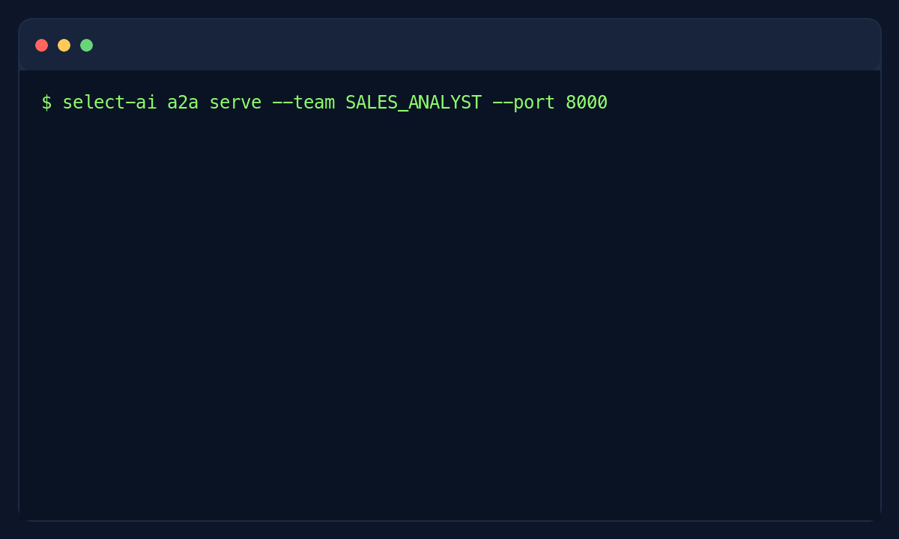

1. Introduction to Select AI for Python¶
select_ai is a Python module that helps you invoke DBMS_CLOUD_AI
using Python. It supports text-to-SQL generation, retrieval augmented generation
(RAG), synthetic data generation, and several other features using Oracle-based
and third-party AI providers.
Select AI for Python bridges Oracle Database’s Select AI capabilities and the Python ecosystem. It gives Python applications a higher-level API for working with AI providers, credentials, profiles, natural language prompts, vector indexes, conversations, summarization, synthetic data, and AI agent workflows.


Connect an A2A client to a Select AI agent team. Follow the A2A guide to run the server.¶
For a complete setup-to-query example, start with Run your first SQL query. Existing users can review What’s new in 1.5.0 and Compatibility.
1.1. What you can build¶
Start with the workflow you want to build:
Natural language data apps: generate SQL, return query results as pandas DataFrames, or explain results in plain language with Profiles and Async Profiles.
RAG and chat assistants: ground answers in your documents with Vector Indexes and keep chat context with Conversations.
AI agent workflows: compose tools, tasks, and agents into Teams, then expose a team to other AI applications through an Agent2Agent (A2A) server.
Python web services: add Select AI endpoints to FastAPI, Flask, or Django using the pool lifecycle patterns in Web Frameworks.
Concurrent prompt processing: use threads, async tasks, queues, or a database pipeline with the Concurrency Guides.
Content and test-data tools: summarize content, translate text, or generate Synthetic Data for database tables.
Terminal workflows: chat, generate SQL, and run an A2A server with the optional Command Line Interface.
1.2. Core concepts¶
Most workflows use the same building blocks:
Concept |
Purpose |
Start here |
|---|---|---|
Connection |
Connect to Oracle Database using a standalone connection or a pool. |
|
Privileges |
Grant package privileges and network ACLs required for Select AI calls. |
|
Provider |
Describe the AI service, model, endpoint, region, or provider-specific options. |
|
Credential |
Store provider and service secrets securely in Oracle Database. |
|
Sharing and ownership |
Share profiles, vector indexes, teams, and credentials with users or roles and address objects owned by another schema. |
|
Profile |
Combine provider, credential, database object scope, and generation options into a reusable Select AI profile. |
|
Actions |
Choose what Select AI should do with a prompt, such as show SQL, run SQL, chat, narrate, summarize, or translate. |
|
Conversation |
Keep prompt history for context-aware chat sessions. |
|
Vector index |
Index document content for RAG over trusted source material. |
|
Agent |
Define tools, tasks, agents, and teams for multi-step AI workflows. |
|
Agent2Agent (A2A) |
Expose an agent team as a discoverable service for A2A clients. Choose standalone or clustered deployment and fixed or dynamic connections. |
1.3. Synchronous and asynchronous APIs¶
select_ai supports both synchronous and asynchronous programming styles.
Use the synchronous APIs for scripts, notebooks, command-line tools, and simple
services. Use the asynchronous APIs with asyncio applications, async web
frameworks, and workloads that need to run many prompts concurrently.
For long-running services, create a connection pool once during application startup and close it during shutdown. See Connection, Web Frameworks, and Concurrent Prompt Processing for patterns.
1.4. Supported Python versions¶
The Select AI Python API supports Python versions 3.11, 3.12, 3.13, and 3.14.